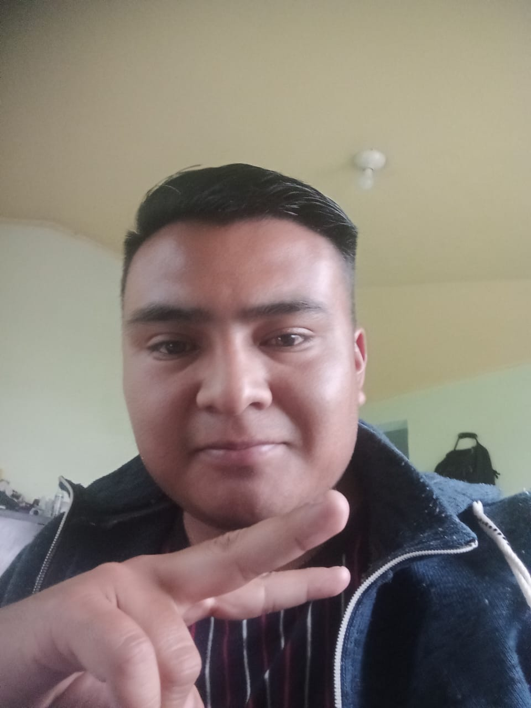

He trabajado con programas no muy complejos entre ellos se encuentra la configuracion de claves de acceso firmadas elaboarada con .Net, un pequeño Ecommerce elaborado con el framework de Laravel usando el esquema MVC y Finalmente un control de Acceso de Personal e Iventarios para una micro empresa de servicios de Seguridad privada.
Soy una persona a la que le gusta realizar diversas cosas poniendome retos y tratando de realizarlos para lograr llegar a mis objetivos no soy muy bueno en varias cosas pero me gusta intentar hasta hacerlas funcionar.